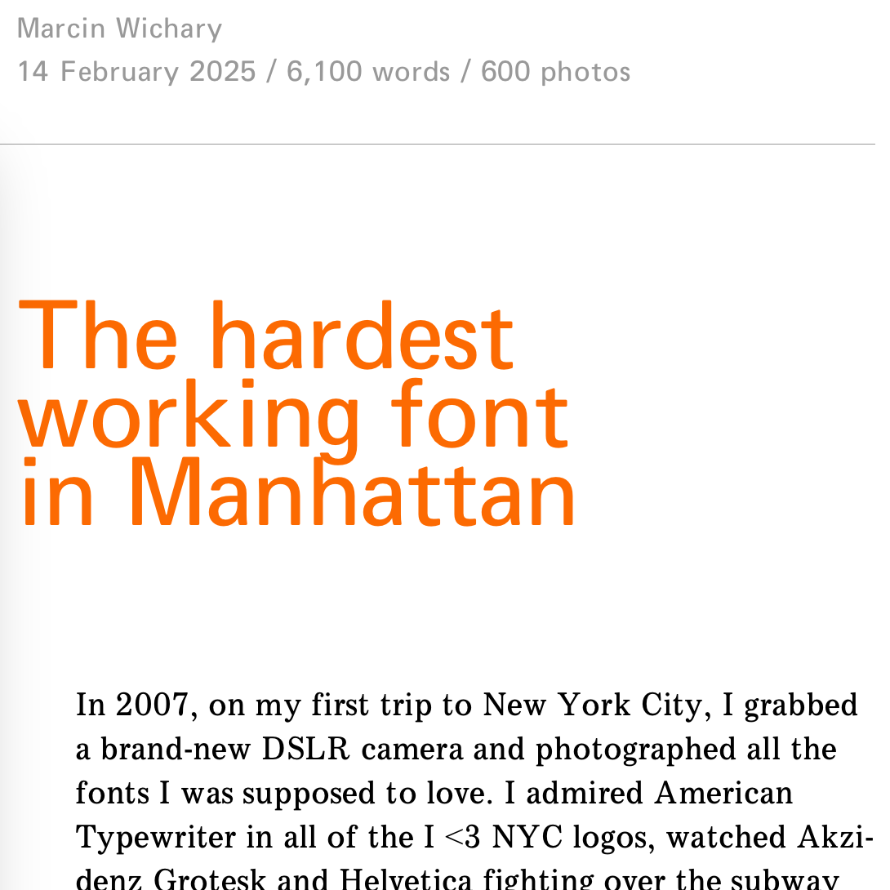

The hardest working font in Manhattan
Perma🔗 (via Simplebits.com)

This is totally worth the 6,100 words in the article. I have so many tabs open because of this article. Here's a taste of it all:
- ANSI Line Conventions and Lettering - I love the design of ANSI document(?), but the last couple pages have the Gorton elements
- Hershey Fonts - which talks about the origin of vector letering
- Alpha (for OpenSCAD)
- Y14.5M-2009 Font - an engineering font
- osifont - a free CAD font which conform to the IS0 3O98 specification (needed in some European countries)
- All sorts of things on Archive.org about Gorton, including this Gorton Master Copy Type brochure - which feels like something I could just look through, both for Gorton, as well as the design of the brochure itself.
- Gorton recreations - which includes Dan Cederholm's Ships Whistle, as well as Gorton Perfected - both fonts I (now) own.
- dsky-fonts - fonts trying to look authentic to the user interface to the Apollo Guidance Computer
Really, just go read the article.
- Prior: New Text File in Finder
- Next: RandomA11y